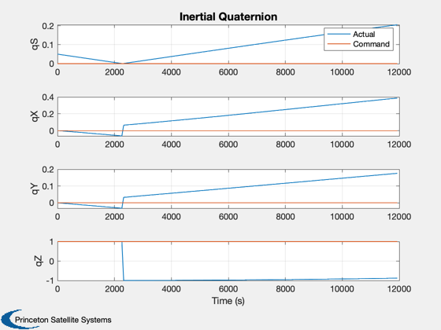
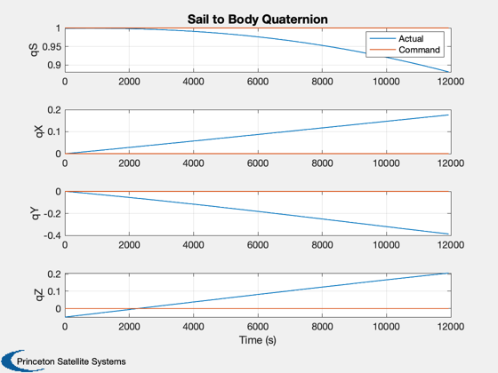
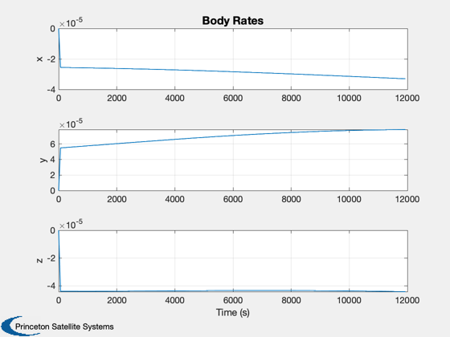
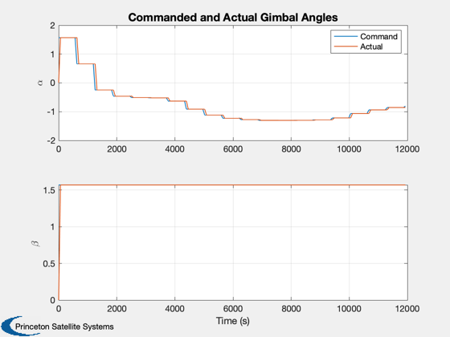
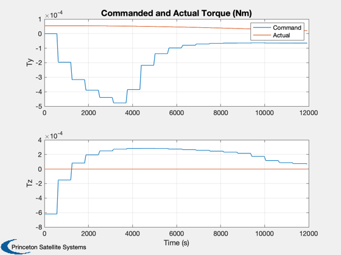
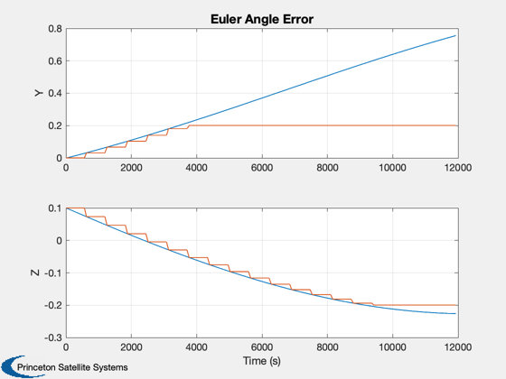
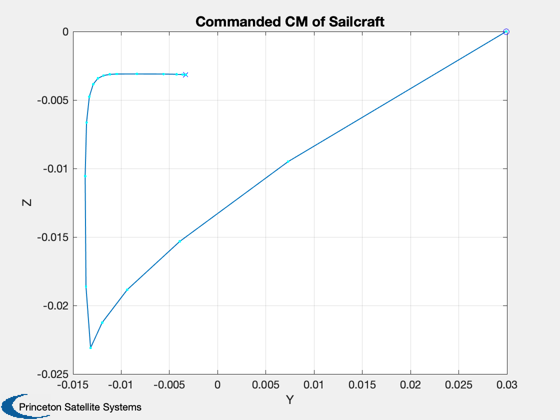
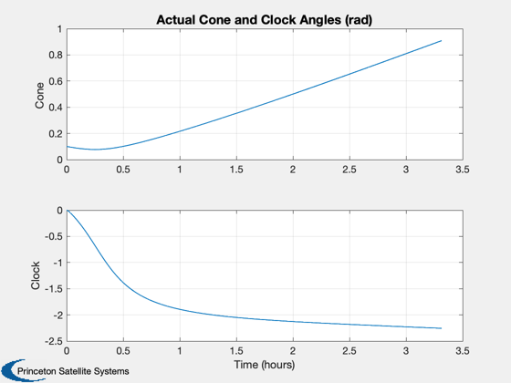
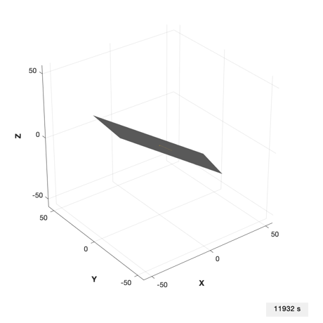

Demonstrate gimballed boom control.
This demo uses the PlateWithBoom CAD model. The gimbals have a
1-2 sequence, first around the X axis and then around the Y axis.
The control law is designed using PIDMIMO. There is no roll
actuation and therefore the attitude trajectory must use
only Y and Z torques.
The attitude dynamics assume fixed gimbal rates.
The CAD model is a perfectly specular plate with a control boom.
Functions demonstrated:
PIDMIMO
ConeClockToQConstrained
HGimballedBoom
TwoBodyRateModel
SailDisturbance
Since version 7.
------------------------------------------------------------------------
See also BoomActuation, which rotates the gimbals without following a
specific control law., AC, ACPlot, CrossSection, DrawSCPlanPlugIn,
PIDMIMO, QForm, QMult, QPose, QTForm, Constant, WaitBarManager, Plot2D,
TimeLabl, Mag, RK4, Unit, JD2000, El2RV, Accel, GimbalRates,
HGimballedBoom, ConeClockToQConstrained, QSail, QToConeClock,
HingeRotationMatrix, ProfileStruct, SailDisturbance, SailEnvironment
------------------------------------------------------------------------
Contents
coneCommand = 0;
clockCommand = 0;
cone0 = 0.1;
clock0 = 0.0;
aRateNom = 0.3;
wn = 0.0001;
deltaAngle = 0.2;
tDuration = 12000;
Clean up workspace
clear SailDisturbance
Load the control boom sail model
g = load('PlateWithBoom.mat');
Sim timing
dTo = floor(2*pi/wn/100);
dTi = dTo/10;
nSim = floor(tDuration/dTi);
Control parameters - use PIDMIMO to design control loops
aNom = aRateNom*ones(2,1);
xN = zeros(6,1);
inr = diag([1 1 1]);
zeta = 3;
tauInt = 2*pi/zeta/wn;
omegaR = 5*wn;
sType = 'z';
[aC, bC, cC, dC] = PIDMIMO( inr, zeta*ones(1,3), wn*ones(1,3), tauInt*ones(1,3), ...
omegaR*ones(1,3), dTo, sType );
Sail physical parameters
aSail = CrossSection(g);
Ps = 1367/3e8;
fSail = 2*Ps*aSail*[-1;0;0];
aBoom(:,1) = Cross([0;1;0],fSail);
aBoom(:,2) = Cross([0;0;1],fSail);
mC = g.body(1).mass.mass;
mB = g.body(2).mass.mass;
rBoomCM = Mag(g.body(2).mass.cM);
Create the disturbance profile
Initial Julian date
p = ProfileStruct;
p.jD = JD2000;
We are creating a circular heliocentric orbit.
r = Constant('au');
mu = Constant('mu sun');
el = [r 0 0 0 0 0];
Orbit state
[p.r,p.v] = El2RV(el,[],mu);
Initial Quaternion (inertial to body frame)
q0 = ConeClockToQConstrained(cone0,clock0,p.r,p.v,-Unit(p.r));
p.q = q0;
core and the boom. The core is defined as body 1 in the CAD file.
p.angle = [0;0];
p.axis = [1 0;0 1;0 0];
p.body = [2 2];
Create the data structure
d = [];
d.aeroOn = 0;
d.albedoOn = 0;
d.solarOn = 1.0;
d.magOn = 0;
d.radOn = 0;
d.ggOn = 1.0;
d.planet = 'sun';
Initial state
t = 0;
tO = dTo;
w = [0;0;0];
angle = [0;0];
aDot = [0;0];
x = [p.q;w;angle;aDot];
hW = [0;0;0];
alpha = 0;
beta = 0;
cM = [0;0];
tPlot = zeros(1,nSim);
xPlot = zeros(length(x),nSim);
hPlot = zeros(3,nSim);
tqPlot = zeros(6,nSim);
aCPlot = zeros(2,nSim);
aEPlot = zeros(4,nSim);
qSPlot = zeros(4,nSim);
cMPlot = zeros(2,nSim);
Commanded quaternion, inertial to body frame, constant
qC = ConeClockToQConstrained(coneCommand,clockCommand,p.r,p.v,-Unit(p.r));
uI = QTForm( qC, [1;0;0] );
sN = sin(coneCommand);
cN = cos(coneCommand);
qOld = p.q;
Located at the center of the body frame.
qIToSail = QSail( -Unit(p.r), p.r, p.v );
Environment - model as constant over this time period.
e = SailEnvironment( 'sun', p, d );
Simulation loop
WaitBarManager( 'initialize', struct('nSamp',nSim,'name','Boom Control Demo') );
for k = 1:nSim
tPlot(k) = t;
xPlot(:,k) = x;
qSPlot(:,k) = QMult(QPose(qIToSail),x(1:4));
if( qSPlot(1,k) < 0 )
qSPlot(:,k) = -qSPlot(:,k);
end
[f,tq] = SailDisturbance( g, p, e, d );
tqPlot(4:6,k) = tq.total;
if( qC(1) < 0 )
qC = -qC;
end
qIToB = x(1:4);
if( qIToB(1) < 0 )
qIToB = -qIToB;
xPlot(1:4,k) = qIToB;
end
uSailB = QForm( qIToB, uI );
errY = uSailB(3);
errZ = -uSailB(2);
eulErr = [errY;errZ];
if (tO >= dTo)
angleError = [0;eulErr];
if (Mag(angleError) > deltaAngle)
angleError = sign(angleError).*min([abs(angleError) [0;[1;1]*deltaAngle]],[],2);
end
accel = cC*xN + dC*angleError;
xN = aC*xN + bC*angleError;
tExt = -g.mass.inertia*accel;
cM = -pinv(aBoom)/cos(cone0)^2*tExt/(mB/(mC+mB));
mCM = Mag(cM);
if (mCM >= rBoomCM)
hB = 0;
else
hB = sqrt(rBoomCM^2 - mCM^2);
end
uB = Unit([hB;cM]);
alpha = atan2(uB(2),-uB(3));
beta = acos(uB(1));
tO = 0;
end
[aDot,angleCommand] = GimbalRates( x(8:9), [alpha;beta], aNom, dTi );
aEPlot(1:2,k) = eulErr;
aEPlot(3:4,k) = angleError(2:3);
aCPlot(:,k) = angleCommand;
tqPlot(1:3,k) = tExt;
cMPlot(:,k) = cM;
[hPlot(:,k), hW] = HGimballedBoom( [zeros(6,1);x], g, p.axis, aDot, hW );
x(10:11) = aDot;
x = RK4( 'TwoBodyRateModel', x, dTi, t, f, tq, g, p, hW );
t = t + dTi;
tO = tO + dTi;
p.jD = p.jD + dTi/86400;
p.q = x(1:4,:);
p.angle = x(8:9);
WaitBarManager( 'update', k ); drawnow;
end
WaitBarManager( 'close' );
Prepare data for plotting
qSC = QMult(QPose(qIToSail),qC);
if qSC(1) < 0
qSC = -qSC;
end
qCPlot = repmat(qSC,1,nSim);
[coneP,clockP] = QToConeClock(xPlot(1:4,:),repmat(p.r,1,nSim),repmat(p.v,1,nSim),...
-repmat(Unit(p.r),1,nSim));
[tPlot2, tLabl] = TimeLabl( tPlot );
h = [];
h(1) = Plot2D(tPlot,[xPlot(1:4,:);repmat(qC,1,nSim)],'Time (s)',{'qS','qX','qY','qZ'},'Inertial Quaternion',[],[1 5; 2 6; 3 7; 4 8]);
legend('Actual','Command')
Plot2D(tPlot,[qSPlot;qCPlot],'Time (s)',{'qS','qX','qY','qZ'},'Sail to Body Quaternion',[],[1 5; 2 6; 3 7; 4 8]);
legend('Actual','Command')
h(2) = Plot2D(tPlot,xPlot(5:7,:),'Time (s)',{'x','y','z'},'Body Rates');
h(3) = Plot2D(tPlot,[aCPlot;xPlot(8:9,:)],'Time (s)',{'\alpha','\beta'},'Commanded and Actual Gimbal Angles',[],{[1 3],[2 4]});
legend('Command','Actual')
h(4) = Plot2D(tPlot,tqPlot,'Time (s)',{'Ty','Tz'},'Commanded and Actual Torque (Nm)',...
[],{[2 5],[3 6]});
legend('Command','Actual')
Plot2D(tPlot,aEPlot,'Time (s)',{'Y','Z'},'Euler Angle Error','lin',{[1 3] [2 4]});
Plot2D(cMPlot(1,:),cMPlot(2,:),'Y','Z','Commanded CM of Sailcraft');
hold on
plot(cMPlot(1,1),cMPlot(2,1),'bo');
plot(cMPlot(1,end),cMPlot(2,end),'bx');
plot(cMPlot(1,:),cMPlot(2,:),'c.');
      
Try plotting cone/clock angles
Plot2D(tPlot2,[coneP;clockP], tLabl, {'Cone','Clock'}, 'Actual Cone and Clock Angles (rad)')
if (0)
c = cd;
dBC = fileparts(which('BoomControl'));
cd(dBC)
print(h(1),'-depsc2','BCQuaternion')
print(h(2),'-depsc2','BCRates')
print(h(3),'-depsc2','BCAngles')
print(h(4),'-depsc2','BCTorque')
end
tag = DrawSCPlanPlugIn( 'initialize', g );
nO = floor(dTo/dTi);
nAnim = floor(0.5*nSim/nO);
kAnim = 1:nAnim:nSim;
u = uicontrol('style','text','string','0 s','position',[380 10 60 20]);
yA = g.radius*[-1 1 -1 1 -1 1];
for k = kAnim
g.body(1).bHinge.q = qSPlot(1:4,k);
bBoomToCore = HingeRotationMatrix( xPlot(8:9,k), [1 0;0 1;0 0] )';
g.body(2).bHinge.b = bBoomToCore;
DrawSCPlanPlugIn( 'update', tag, g );
axis(yA);
set(u,'string',[num2str(k*dTi) ' s'])
drawnow;
pause(0.2);
end
 